pt cm
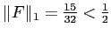
, on sait que
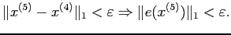
Or,
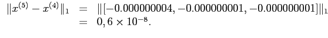
Comme
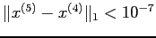
, on en déduit que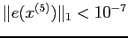
.
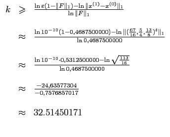
On doit donc faire 33 itérations pour obtenir la précision souhaitée.
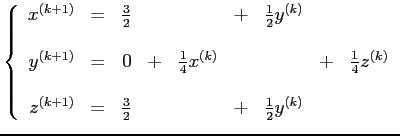
et la matrice d'itération  est
est
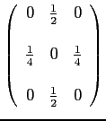
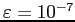
, on a

On doit donc faire 25 itérations de Jacobi pour obtenir la précision souhaitée.
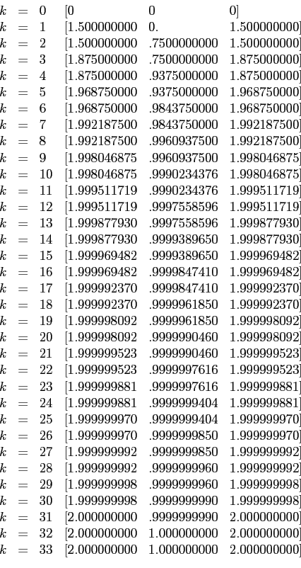
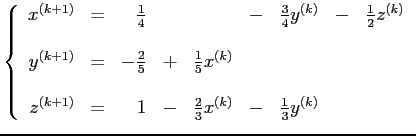
et la matrice d'itération  est
est
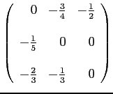
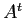
est à dominance diagonale stricte.
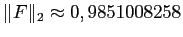
. Ainsi, pour , on a
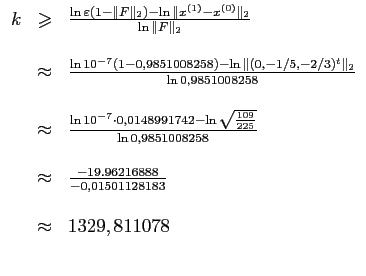
On doit donc faire 1330 itérations de Jacobi pour obtenir la précision souhaitée.
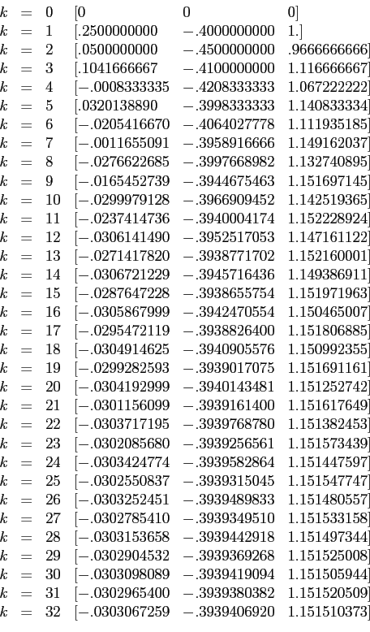
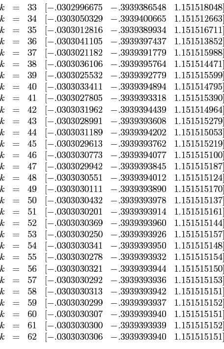
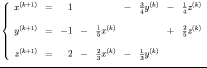
et la matrice d'itération  est
est
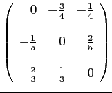
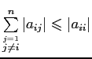
pour tout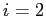
. On en conclut que la méthode de Jacobi converge pour tout estimé initial
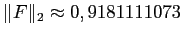
. Ainsi, pour , on a
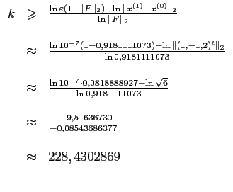
On doit donc faire 229 itérations de Jacobi pour obtenir la précision souhaitée.
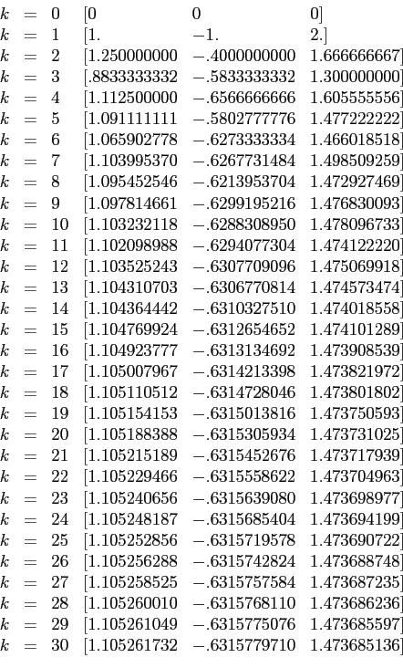
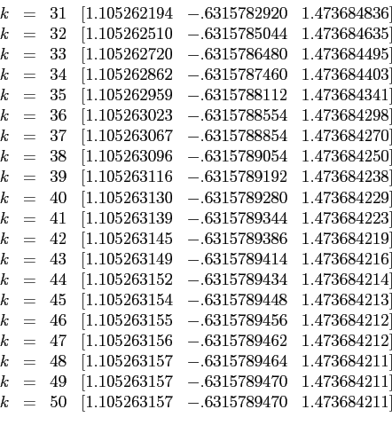
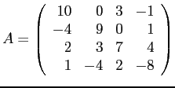
Comme est à dominance diagonale stricte, on sait que le système itératif converge.
Prenons
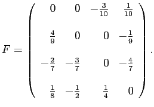
On obtient à 10 chiffres significatifs les itérés
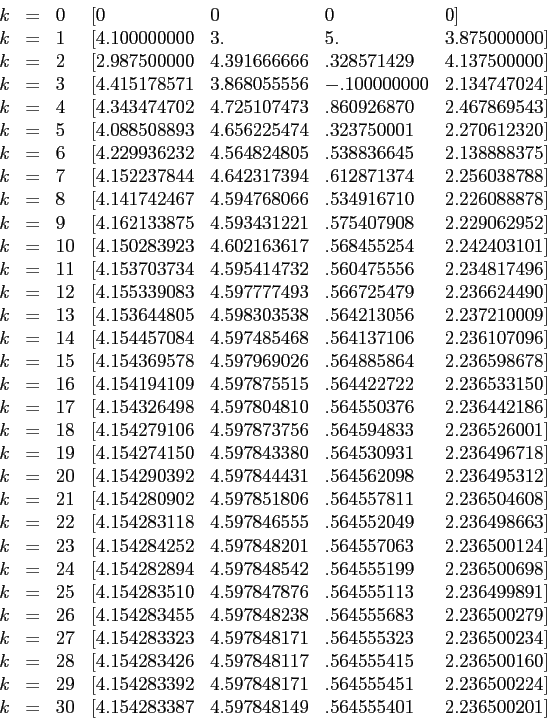
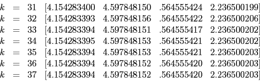
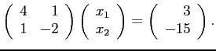
Alors, est à dominance diagonale stricte, mais
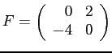
a comme norme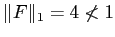
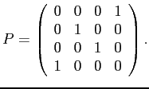
Alors,
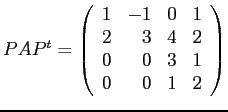
et ainsi  est réductible.
est réductible.
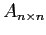
une matrice non singulière et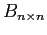
une matrice quelconque.
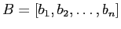
où les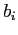
sont les colonnes de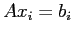
. Alors,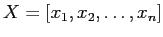
est la matrice cherchée.
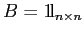
.
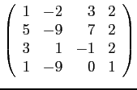
a un rayon spectral strictement plus grand que un et qu'il en est de même pour toute permutation de cette matrice. Ainsi, la méthode de Jacobi ne peut converger.